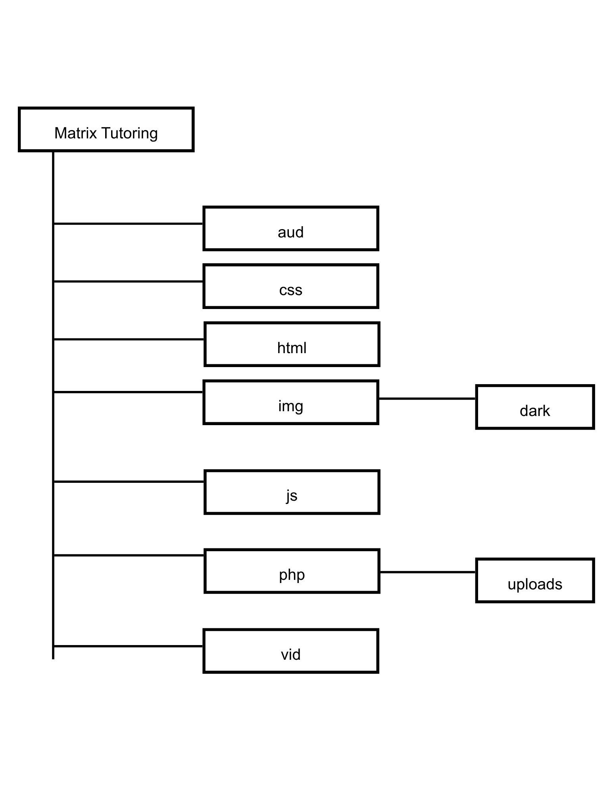

The Matrix Tutoring website is a website that was developed using HTML5, CSS3, PHP, JavaScript, and MySQL. The frontend of the website enables users to browse through the tutoring services, create accounts, submit consultation requests, submit job applications, and view their profile. The website was designed to work on the iPhone 14 Pro Max for mobile users and the HP Pavilion 16 for desktop users.
Technologies used:
HTML5: Creating the structure and layout for the webpages
CSS3: Styling the website.
JavaScript: Enables the interactiveness of the website.
PHP: Provides dynamic pages, communication with the database, and processing forms.
MySQL: Stores user input through the forms, and accounts.
Project Structure:
The folder structure of the project which includes the frontend. There is a home page, service catalogue, registration and login pages, user pages, and admin pages.

JavaScript Features:
Navigation bar
Theme selection
Sound effects
CSS:
Theme switching layouts
Responsive for mobile devices
Transitions
Multimedia:
Images
A video
Audio
Google Map
Google Chart
Responsive Design:
The website uses CSS media queries to work with mobile users who are on the iPhone 14 Pro Max. The navigation, forms, images, as well as the layouts adjust themselves depending on whether the user is on desktop or on a mobile device.